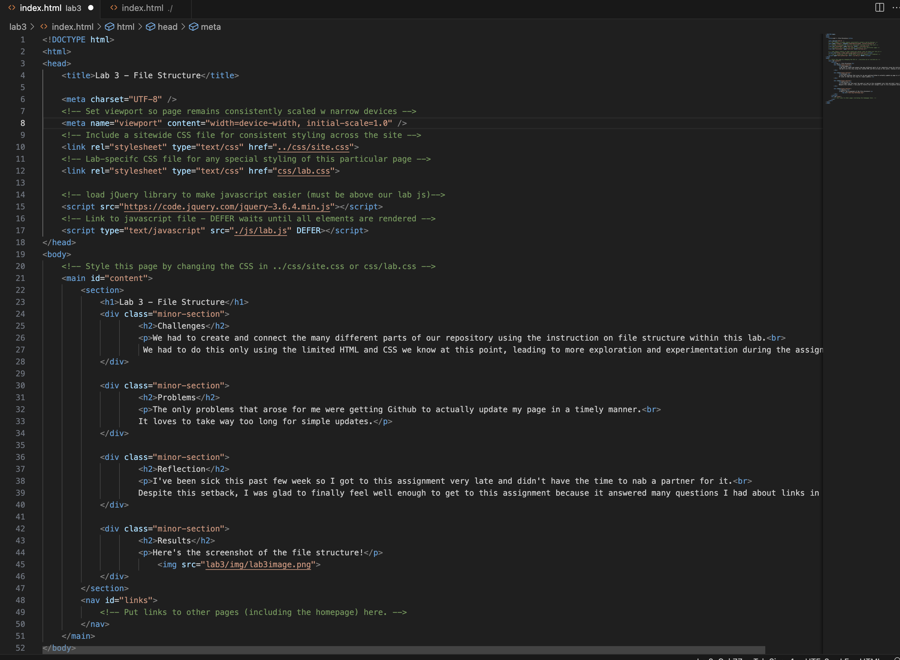

Lab 3 - File Structure
Challenges
We had to create and connect the many different parts of our repository using the instruction on file structure within this lab.
We had to do this only using the limited HTML and CSS we know at this point, leading to more exploration and experimentation during the assignment.
Problems
The only problems that arose for me were getting Github to actually update my page in a timely manner.
It loves to take way too long for simple updates.
Reflection
I've been sick this past few week so I got to this assignment very late and didn't have the time to nab a partner for it.
Despite this setback, I was glad to finally feel well enough to get to this assignment because it answered many questions I had about links in HTML.
Results
Here's the screenshot of the file structure!
